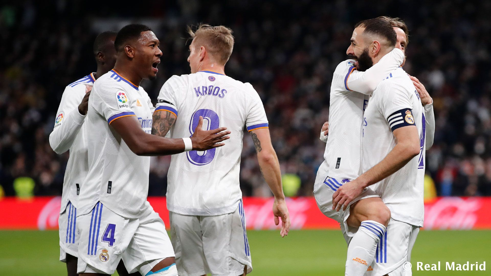

ريال مدريد يعود لسكة الأنتصارات عبر بوابة الافيس
عاد ريال مدريد من باريس بعد هزيمه في اخر الثواني من المباراة نتج عنها هجوم كبير على انشيلوتي من الجماهير والصحافه لدرجة انهم يطالبون باقالته بسبب المستوى السيء الذي لايتحمله العين وناقدين على اسلوبه وتكتيكه الركيك الذي لايشبه ريال مدريد ولا بقوة اسمه
ليوعد بعدها انشيلوتي الجماهير بتغيير الأسلوب بداية من مباراة الافيس وتدرب الفريق على الضغط واغلاق المساحات استعدادا للمباريات القادمه
في حراسة المرمى كورتوا
في الدفاع ميندي ميليتاو الابا كارفخال
في الوسط مودريتش كاسيميرو فالفيردي
في الهجوم فينيسيوس بنزيما اسينسيو
اشرك انشيلوتي فالفيردي بدال كروس لسرعة فالفيردي واختراقاته وقوته في ممارسة الضغط على الخصم ونجح ماكان يأمله انشيلوتي من فالفيردي
استحوذ ريال مدريد على الكرة في الشوط الأول ولكن بدون فرص وتهديد لمرمى الافيس ولكن في الشوط الثاني اختلفت امور كثيره
ريال مدريد كان اكثر خطوره على المرمى من الشوط الاول وتحديدا بعد الدقيقه 50 ليسجل اسينسيو هدف رائع من خارج منطقة الجزاء في الدقيقة 63 وبعد عمل جماعي يسجل فينيسيوس الهدف الثاني لريال مدريد في الدقيق 80 ومن ركلة الجزاء بنزيما يسجل في الدقيقه 93